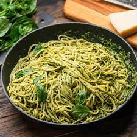

Recipe for Pesto Pasta

Description
Pesto Pasta, or Pesto alla Genovese pasta, is the famous pasta with handmade side made of basilico and olive oil from the
coastal city of Genoa. It's a simple and tasty recipe that never disappoints!
Ingredients
- Pasta
- Onion and oil
- Pesto sauce
- Parmesan Cheese
Steps
- Boil the pasta in slated water and drain
- Cook the onion in the oil, then stir the pesto and seaasonings
- Add the pesto mixture to the hot pasta and toss with cheese